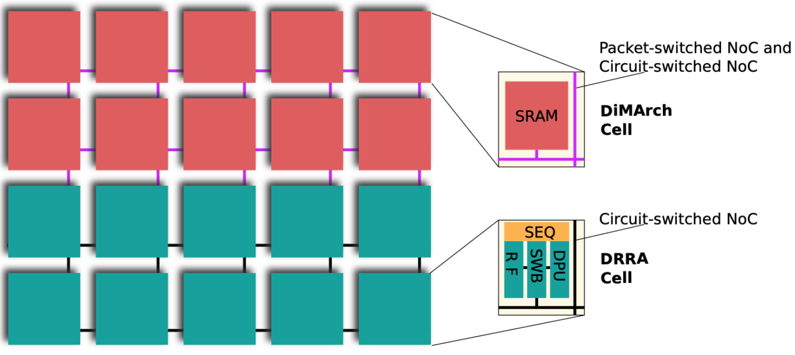

DRRA-1 Overview
The functional SiLago blocks in DRRA-1 are designed as CGRAs. There are some significant differences from conventional CGRAs. We introduce two CGRAs fabric. One of them has been designed to host dense linear algebra applications, including neural networks. This fabric is called dynamically reconfigurable resource array (DRRA). The second fabric caters to scratchpad memory and is called distributed memory architecture (DiMArch). The following figure shows both fabrics. We also use DRRA to refer to the whole fabric (DRRA+DiMArch) because the DRRA cells are the most important cell type in such CGRA fabric.

The DRRA Fabric
A DRRA fabric is organized as a 2D matrix with two rows and multiple columns. These cells are connected by a sliding window circuit-switch regional NoC. Each DRRA cell has a datapath unit (DPU), a register file (RF), a sequencer (SEQ) and a switchbox (SWB). We next briefly describe the functionality and architectural aspects of these components.
The DPU is customized for dense linear algebra. It has four inputs and two outputs and is ready for complex number processing. The DPU comes in different variations for different application domains. It is also equipped with registers to hold constants or intermediate computation results.
The RF has 32 or 64 words of 16 bits, two read and two write ports. Each port equipped with dedicated address generation unit (AGU) provides various ad- dressing modes, including linear, circular buffer, bit-reverse, and zig-zag. Besides the spatial addressing, the AGU is also equipped with temporal programming to control the rhythm of the address streams. Three delays in clock ticks define the compile-time and run-time temporal programmability. These delays are the initial delay before the stream starts, the middle delay defines the interval between neighboring addresses, and the repetition delay defines the delay before the stream repeats. Synthesizing these delays as part of synchronization and scheduling is a crucial differentiator in the proposed HLS compared to conventional HLS. The AGU also represents the second level of control and is parallel and spatially distributed. Address generation is an independent, distributed, and autonomous resource. These attributes have strongly influenced the data structure used for the intermediate representations (IRs) in the HLS tool for SiLago.
The SWB and the sliding window interconnect scheme provide DRRA with a programmable spatially local connectivity. The output signals of each DRRA cell drive buses that straddle two columns to the left and two to the right. Since each DRRA cell has such an output bus, these buses slide by one column to create a sliding window interconnect scheme. The output buses connect to the input buses in each column via the SWBs. The input buses feed the inputs of the DPUs and the RFs. This sliding window interconnect scheme provides uni-/multi- /broadcasting- and non-blocking connections between all DPUs and RFs within the sliding window span. The interconnect scheme expects rich spatial locality in computation, suitable for dense linear algebra applications. These SWBs and the interconnect scheme are fundamental to the SiLago VLSI design flow because they eliminate the need to create ad-hoc wires to connect these atomic building blocks – the SiLago blocks. One of the challenges in the SiLago HLS tool is configuring the SWBs to create the datapath to execute fragments of the algorithm dynamically.
In above figure, the fabric consists of many interconnected cells independent of each other in the control system. The SEQ is the level-1 controller in each cell. It sends instructions to many level-2 controllers to configure these local finite state machines (FSMs). Each level-2 controller controls one datapath that implements a specific functionality, such as function computation or address generation. The level-1 controller forms a thread, and level-2 controllers and their datapaths implement micro-threads.
The DiMArch Fabric
Since the DRRA fabric addresses the computational needs of dense linear algebra, the DiMArch fabric complements it with the scratchpad memory capacity. The DiMArch fabric is a CGRA fabric customized for run-time partition and data streaming. DiMArch cells, like the DRRA cells, are synchoros SiLago blocks that enable composition by abutment. The DiMArch fabric is organized as a 2D matrix, and the physical dimensions of its column are aligned with the DRRA column dimensions to enable column-wise abutment with the DRRA fabric. Each DiMArch cell has 256 words of 256 bits and comes with one read and one write port, also equipped with AGUs. Two NoCs glue together the DiMArch cells for control and data. The control NoC is used to configure the AGUs and the data NoC. The control NoC is packet-switched, and the data NoC is circuit-switched;. The data NoC configuration decides the contiguous cluster of DiMArch cells. Such clusters can behave like a larger single memory by appropriately configuring the AGUs in the individual DiMArch cells. The bottom/top row of DiMArch cells has special interface logic to connect to the register file (RF) in the DRRA fabric via additional high bandwidth ports.